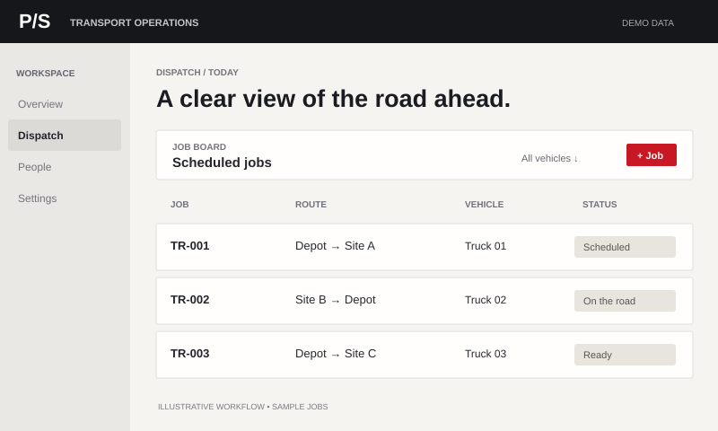

Illustrative interface · sample data01 / LOGISTICS + TRANSPORT
Transport Operations Tool
Jobs, vehicles and updates can be difficult to follow across separate systems.
A workflow concept bringing dispatch, job tracking and transport information into one clear view.
Dispatch · Job tracking · Web appLet’s talk